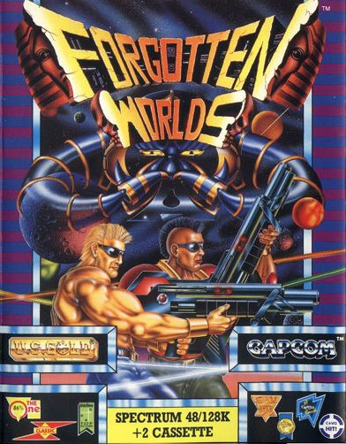
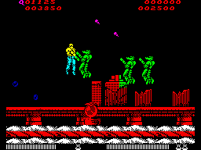

Forgotten Worlds


{kind=link}

| Publisher: | US Gold |
| Price: | £8.99 / £12.99 |
| Year: | 1989 |
| Source: | CRASH, Issue 65 |

The civilised world is in dire peril. The evil Emperor Bios has created eight generally nasty gods with a distinct liking for destroying anything that looks remotely humanoid. Someone has to stop them, and quickly, before more mighty cities are transformed from bustling centres of activity into empty Forgotten Worlds.
It would seem that millions and millions of very worried and angry people can do some very impressive thing, if they concentrate hard enough, and I don’t just mean an ‘A’ in French, either. No, projected from the minds of the distraught last survivors of the human race comes... Nick Roberts...! No, no, get off, Nick, I’m writing this. Comes... two mega ’ard warriors, ready to tackle the greatest challenge (except Navy Moves), and generally ward off evil and save the universe; yer average superheroes, really.

Their task is to destroy every last speck of evil in the universe — that means Bios and all his demi-gods, the Golden Dragon, the God of Destruction, and the Paramecium. Maybe they could clean up the CRASH office while they’re at it...
Five levels confront the daring player of Forgotten Worlds. In each there’s a horde of alien monsters, some of whom leave behind a blue blob — a Zennie coin in reality — which can be traded in the shop for all sorts of goodies: extra firepower, weapons, cans of Coke (well, maybe not).
Forgotten Worlds has an innovative control method, allowing you to swing around and fire in different directions by using left and right with the fire key pressed. Without fire pressed, controls react normally.
Though Forgotten Worlds has comparatively poor graphics, its gameplay is very good; the feel of the hit Capcom arcade machine has been represented to the highest level one could expect. Despite the fact that the scenario and game elements have been used one zillion times before (with the exception of the rotational shooting), it’s addictive and playable, and though a touch pricey at nine quid, it should be considered by everyone!
MIKE
Forgotten Worlds is smarter than the average shoot-’em-up. With its excellently defined sprites, smooth animation and scrolling it’s an absolute joy to play. This is one of the few shoot-’em-ups to incorporate diagonal scrolling (wow!). On later levels — and with aliens flying at you from all directions — it’s a real challenge. The shop sequences are quite well done and extra weapons bought there (with your hard-earned Zennies) really help in the mindless destruction. I have a couple of niggles: the aliens you fight are not varied enough and sound is sparse. Otherwise Forgotten Worlds decidedly lives up to the standards we have come to expect from US Gold.
NICK
RATING
The accurate conversion of this Capcom arcade hit should please everyone.
| Presentation: | 90% |
| Graphics: | 91% |
| Sound: | 89% |
| Playability: | 91% |
| Addictivity: | 90% |
| Overall: | 90% |